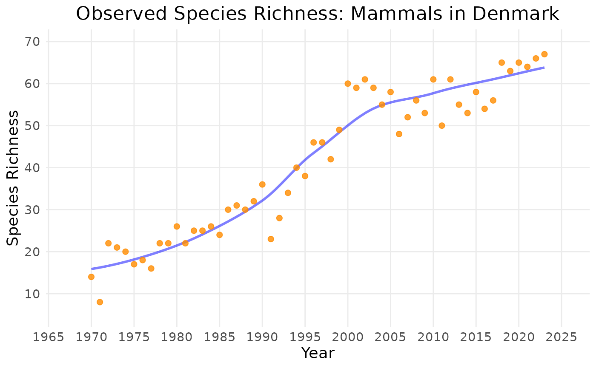
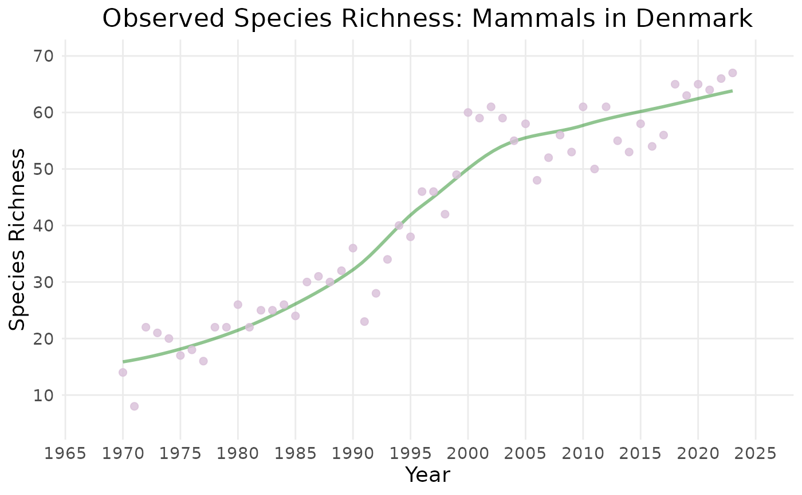

Creates a time series plot of a calculated biodiversity indicator, with an optional smoothed trendline, and visualizes uncertainty.
Usage
plot_ts(
x,
title = "auto",
auto_title = NULL,
y_label_default = NULL,
suppress_y = FALSE,
smoothed_trend = TRUE,
linecolour = NULL,
trendlinecolour = NULL,
envelopecolour = NULL,
gridoff = FALSE,
x_label = NULL,
y_label = NULL,
min_year = NULL,
max_year = NULL,
x_breaks = 10,
y_breaks = 6,
wrap_length = 60
)Arguments
- x
An 'indicator_ts' object containing a time series of indicator values.
- title
Plot title. Replace "auto" with your own title if you want a custom title or if calling the function manually.
- auto_title
Text for automatic title generation, provided by an appropriate S3 method (if calling the function manually, leave as NULL).
- y_label_default
Default label for the y-axis, provided by an appropriate S3 method (if calling the function manually, leave as NULL).
- suppress_y
If TRUE, suppresses y-axis labels.
- smoothed_trend
If TRUE, plot a smoothed trendline.
- linecolour
(Optional) Colour for the indicator line. Default is darkorange.
- trendlinecolour
(Optional) Colour for the smoothed trendline. Default is blue.
- envelopecolour
(Optional) Colour for the uncertainty envelope. Default is lightsteelblue.
- gridoff
If TRUE, hides gridlines.
- x_label
Label for the x-axis.
- y_label
Label for the y-axis.
- min_year
(Optional) Earliest year to include in the plot.
- max_year
(Optional) Latest year to include in the plot.
- x_breaks
Integer giving desired number of breaks for x axis. (May not return exactly the number requested.)
- y_breaks
Integer giving desired number of breaks for y axis. (May not return exactly the number requested.)
- wrap_length
Maximum title length before wrapping to a new line.
Value
A ggplot object representing the biodiversity indicator time series plot. Can be customized using ggplot2 functions.
Examples
# default colours:
plot_ts(example_indicator_ts1,
y_label = "Species Richness",
title = "Observed Species Richness: Mammals in Denmark")

# custom colours:
plot_ts(example_indicator_ts1,
y_label = "Species Richness",
title = "Observed Species Richness: Mammals in Denmark",
linecolour = "thistle",
trendlinecolour = "forestgreen",
envelopecolour = "lightgreen")
